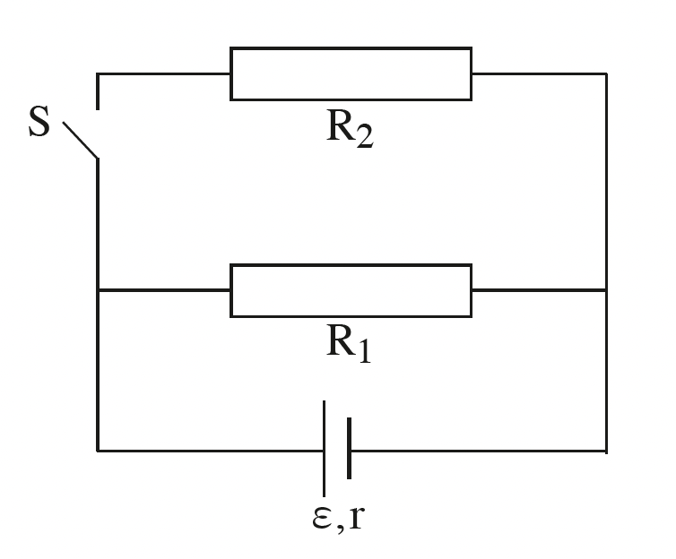

שאלה 3
לפניכם תרשים של מעגל חשמלי המורכב ממקור מתח שהכא"מ שלו ε = 36V והתנגדותו הפנימית r = 6Ω,
נגד שהתנגדותו R1 = 12Ω, נגד שהתנגדותו R2, מפסק S ותיילי הולכה שהתנגדויותיהם זניחות.

qimage-1.png
המפסק S פתוח.
א.
חשבו את כמות האנרגייה שמתפתחת בנגד R1 בפרק זמן של Δt = 200s. (5 נקודות)
ב.
חשבו את נצילות המעגל. (6 נקודות)
ג.
בטאו את ההספק החיצוני של המעגל, P, באמצעות ε, r ו-I (I - עוצמת הזרם שעובר במקור המתח). (5 נקודות)
סוגרים את המפסק S. עוצמת הזרם שעובר במקור המתח משתנה אך ההספק החיצוני של המעגל אינו משתנה.
ד.
היעזרו בתשובתכם על סעיף ג וחשבו את עוצמת הזרם שעובר במקור המתח לאחר סגירת המפסק. (8 נקודות)
ה.
קבעו אם לאחר סגירת המפסק נצילות המעגל גדלה, קטנה או לא השתנתה. נמקו את קביעתכם. (6 נקודות)
ו.
איזו יחידה מן היחידות 1-5 שלפניכם היא יחידת הספק? נמקו את תשובתכם. (3 1/3 נקודות)
| 1. | N C |
| 2. | C2·Ω s2 |
| 3. | J·s |
| 4. | V·C |
| 5. | kW·h |